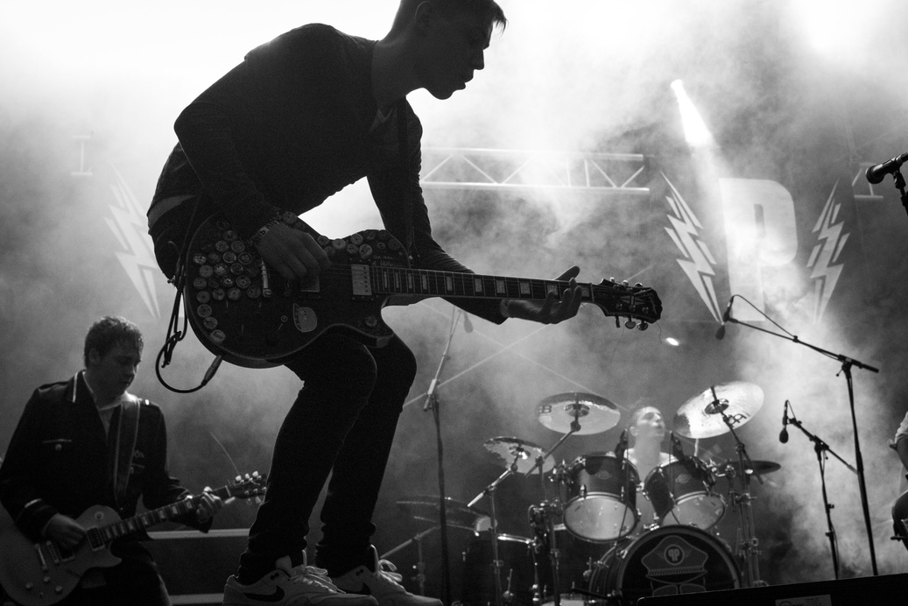
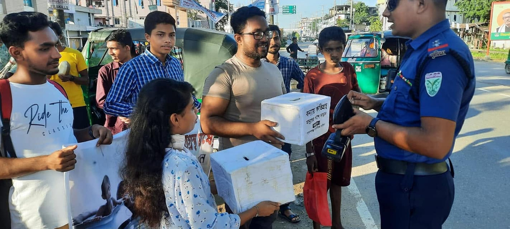
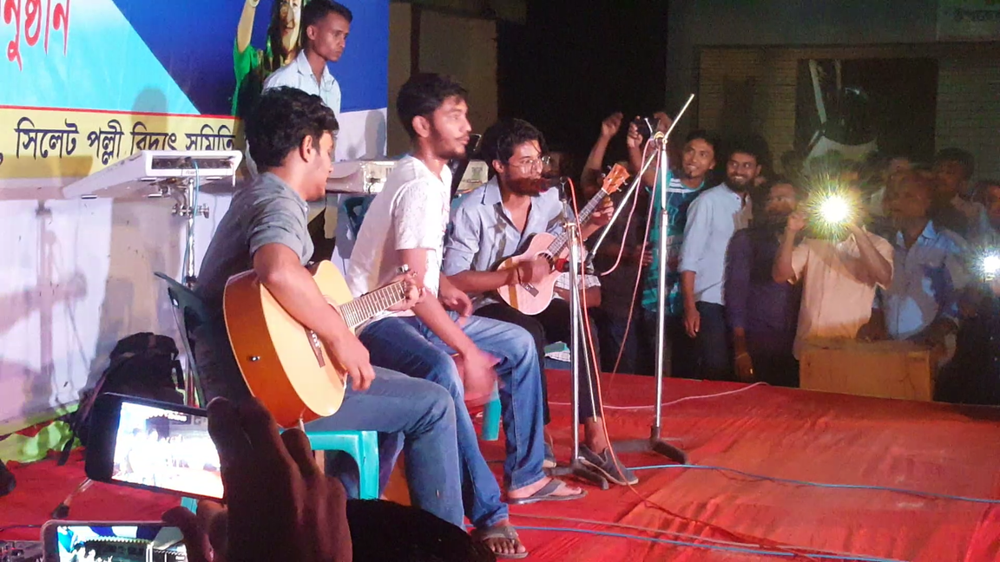

RofiqOlid
MUSICIAN PRODUCER CREATIVE PRACTITIONER
SOUND OFRESILIENCE
A developing initiative
exploring music and
creative practice as
tools for youth
participation,
confidence, practical
skills and community
connection in
Bangladesh.
SOUND OF RESILIENCE
Sound of Resilience aims to provide disadvantaged and underserved young people with introductory opportunities in music education, creative expression and basic digital audio production.
The initiative will begin as a small pilot involving approximately 10–20 participants aged 15–24, prioritising those with limited access to extracurricular creative learning because of financial or resource constraints.
The project will combine practical music activities, songwriting, collaborative learning and introductory recording and audio-production exercises.
Core objective: To make creative learning more accessible while helping young people develop practical skills, confidence and positive opportunities for community participation.


Core objective: To make creative learning more accessible while helping young people develop practical skills, confidence and positive opportunities for community participation.
MORE →